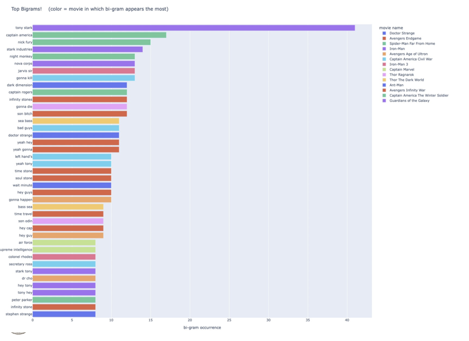

This is a good mapping because the distinct color differences in red vs. blue on the map as well as the distinct color standout
on the battleground state (half red/half blue) makes the graph easy to analyze. However, the focus of the visual is not necessarily
intended to be the swing state.
Shape
Represents attribute of accuracy
This is an okay mapping, because state shapes are represented accurately according to scale. Having the states represented by their outlines
also helps with comprehension of data, as someone does not have to squint at tiny text to decipher which state they are looking at.
However, the size of a state does not necessarily correlate with the number of electoral votes they have and the impact they
have on the overall electoral college.
Size (length)
Represents attribute of accuracy
The shape created by the electoral votes needed to win bar helps voters understand
how close the election would be. The bar is easy to read and shows the accurate belief that the blue
states would win by a large margin.
Colormap(s)
Divergent
Represents attribute of popout
This is an good mapping, because the bold colors and the contrast of red (not a lot) vs blue (a lot)
accomplishes the main point of the visualization. These colors are also semantically meaningful with
the U.S.'s party colors. However, if the map wanted to go into more depth about how truly Democratic
or Republican each state was, they could've more fully utilized the divergent scheme to show states
that were closer to swing than others.
Marks
Lines
Points
Channels
Position (both)
Represents attribute of separability
This is a good mapping, because the position + hue are fully separable. A user is able to understand both the relationship
between launch angle and exit velocity represented by position, as well as scoring value represented by hue.
Color Hue
Represents attribute of discriminality
This is a bad mapping in our opinion because the colors do not lie on a scale gradient or a temperature gradient.
The purple and orange create some contrast, but it is hard to apply the colors to the information depicted.
Position - Horizontal
Represents attribute of grouping
This is a good mapping in our opinion because the horizontal lines representing pop ups, line drives, fly balls,
and ground balls separate all the batted balls into categories that make the visual easier to understand.
ALmost everyone knows what these types of balls are and what they usually look like, so it helps add context
to the visualization.
Colormap(s)
Divergent
Represents attribute of discriminability
This is a bad mapping, because the colors may diverge but are not effective in this context.
The colors are supposed to depict how above or below average a scoring value is, but feel unintuitive.
Also, accessibility is a concern in this, as people may not be able to decipher the difference between
the aveage 'cream' and the grey background and assume there is no data there.

Marks
Lines
Channels
Size - length
Represents attribute of popout
This is a good mapping, because it is easy to see which phrases are most commonly said and that there is one phrase that
very obviously sticks out.
Color - Hue
Represents attribute of discriminability
This is a bad mapping, because there are too many movies to be efficiently represented by colors.
The key features 14 different movies that are each assigned a random color, and it is hard to tell what
the color represents because it is completely arbitrary. It just makes the graph more confusing. Maybe if
the colors were grouped together it would work better to show how many top bigrams each movie had, but it is not helpful
the way it is currently structured.
Position
Represents attribute of accuracy
This is a good mapping because the way the two sides of the graph are set up make it easy to look at the name and quantity
of bigrams. However, the issue with color (hue) negatively affects the position as well.
Colormap(s)
Categorical
Represents attribute of separability
This is a good mapping, because it allows users to look at the channels independently.
For example, someone can just look at the line lengths and observe popularity, or look only
at the colors and know which color represents which category. However, the amount of colors
needed for this dataset may be overwhelming, and color may not be the most effective tool.